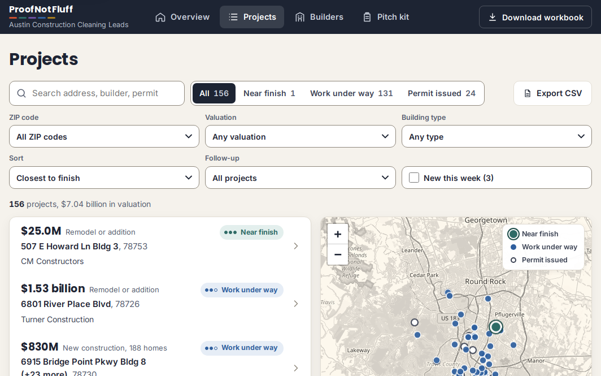
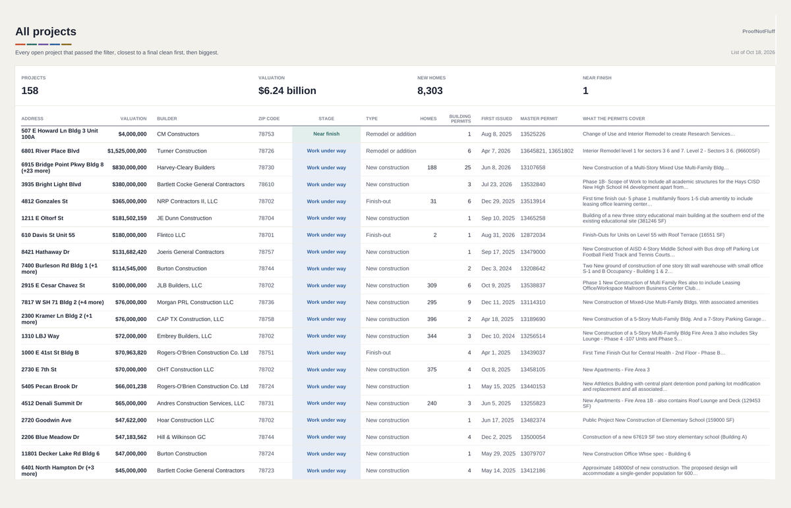

$4.0MRemodel or addition
City descriptionChange of Use and Interior Remodel to create Research Services...
Free sample, updated every Monday
158 open apartment and commercial projects of $500,000 or more in Austin, about $6.24 billion in City valuation, and the builders running them. For cleaning, window cleaning and pressure washing companies.
New list every Monday. Cancel any time.
City data as of Oct 19, 2026. Refreshed every Monday.
A project is near finish when at least one of its building permits is marked Final by the City while others are still open, so final cleans are under way or close. It is the only one on this week's list.
City descriptionChange of Use and Interior Remodel to create Research Services...
Counted from permits where the business is listed as general contractor.
The full list ranks every builder with open work. Get it for $29 a month.
The 25 biggest of 158 open projects. Members get all 158, with a ZIP code filter and near-finish and new tabs, plus the Excel file.
Work under way
City descriptionInterior Remodel level 1 for sectors 3 6 and 7. Level 2 - Sectors 3 6. (96600SF)
Work under way
City descriptionNew Construction of a Multi-Story Mixed Use Multi-Family Bldg...
Work under way
City descriptionPhase 1B- Scope of Work to Include all academic structures for the Hays CISD New High School #4 development apart from the main building and some of...
Work under way
City descriptionFirst time finish out- 5 phase 1 multifamily floors 1-5 club amentity to include leasing office learning center clubhouse fitness and daycare...
Permit issued
City descriptionRedevelopment of Existing Site. New Construction of 4- Story Affordable Housing to Include 2 Connected Fire Areas and associated site improvements...
Work under way
City descriptionBuilding of a new three story educational main building at the southern end of the existing educational site (381246 SF)
Work under way
City descriptionFinish-Outs for Units on Level 55 with Roof Terrace (16551 SF)
Permit issued
City descriptionNew Construction of Sports Facility Scope of Work to Include Admin Building with Offices Flex Hall and Fitness
Work under way
City descriptionNew Construction of AISD 4-Story Middle School with Bus drop off Parking Lot Football Field Track and Tennis Courts (244641 SF)
Work under way
City descriptionTwo New ground of construction of one story tilt wall warehouse with small office S-1 and B Occupancy - Building 1 & 2 (2) Applications
Work under way
City descriptionPhase 1 New Construction of Multi Family Res also to include Leasing Office/Workspace Mailroom Business Center Club Room...
Permit issued
City descriptionNew Construction of a Mixed Use 7-Story Multi-Family Complex...
Work under way
City descriptionNew Construction of a 5-Story Multi-Family Bldg. And a 7-Story Parking Garage...
Work under way
City descriptionNew Construction of Mixed-Use Multi-Family Bldgs. With associated amenities
Work under way
City descriptionNew Construction of a 5-Story Multi-Family Bldg Fire Area 3 also includes Sky Lounge - Phase 4 -107 Units and Phase 5 - 71 Units
Work under way
City descriptionFirst Time Finish Out for Central Health - 2nd Floor - Phase B...
Work under way
City descriptionNew Apartments - Fire Area 3
Work under way
City descriptionNew Athletics Building with central plant detention pond parking lot modification and replacement and all associated site and utility work
Work under way
City descriptionNew Apartments - Fire Area 1B - also contains Roof Lounge and Deck (129453 SF)
Permit issued
City descriptionNew Construction of an Elementary School on Existing Site. Building to include 1 story and 3 story Portions. (94951 SF)
Permit issued
City descriptionNew Construction of a Multi-Family Bldg - Above the Podium Fire Area C
Work under way
City descriptionPublic Project New Construction of Elementary School (159000 SF)
Work under way
City descriptionConstruction of a new 67619 SF two story elementary school (Building A)
Work under way
City descriptionNew Construction Office Whse spec - Building 6
Work under way
City descriptionApproximate 148000sf of new construction. The proposed design will accommodate a single-gender population for 600 middle school girls grades 6-8...
No projects in this sample match. The weekly list covers every open project.
That is the top 25. The full list has all 158, closest to a final clean first, with a ZIP code filter.
Get the full list: $29 a monthStart with the builders, not the buildings. A general contractor with several big jobs open buys subcontracted work on each, so one builder's vendor list can lead to more than one project.
Call the builder's main office and ask who buys cleaning for the project you name. Have the master permit number and the address ready.
Send a one-page capability sheet the same day: what you clean, crew size, insurance, equipment and two references.
Watch the stage. Permit issued is early, work under way means the City has moved the permit's expiry date later than 180 days after it was issued (read from the permit's own issue and expiry dates), and near finish means some of the project's building permits are already finaled.
Price the work before you call:
The same data as this page, every open project instead of a sample, in a members' app and an Excel file.


Every open Austin commercial and apartment project valued at $500,000 or more with a business as general contractor, updated every Monday: closest to a final clean first with a ZIP code filter, new permits and near-finish projects flagged, the builder on each and every building permit behind it, in a members' app with a map and in an Excel file. Plus a pitch kit: a one-page capability sheet outline and an email to builders you can adapt.
Get the full list: $29 a month
Secure checkout by Gumroad. Cancel any time. Refunds and cancelling
Not ready yet? Leave your email and we will let you know when the list adds new cities or features.
Unsubscribe in one click. Your email is stored with Kit, our email provider, and never sold.The City of Austin's Issued Construction Permits dataset on data.austintexas.gov. We pull it every Monday and keep commercial building permits issued in the last 24 months that are still Active, grouped into projects by the City's master permit, valued at $500,000 or more, with a business listed as general contractor.
Austin records a development's valuation on each of its building permits, so a project's valuation can cover several buildings or phases. We show the largest valuation on its open building permits on the list, once; valuations on finaled, shell and garage permits do not count. Treat it as a size signal, not a budget or a contract value.
Projects with no business listed as general contractor, houses, duplexes and three-unit buildings, carports, pergolas, canopies, enclosures, pools and other structures that are not buildings, parking garages, small sheds and booths, shell-only buildings, interior demolition, and roof, equipment, sign, elevator, site and exterior-only work are left out, and so are projects whose building permits are all closed. This free page shows a sample; the weekly list covers every project that passes the filter.
No. You make your own calls and emails. We never contact builders or anyone else on your behalf.
No. Builders appear because their names are on public City of Austin permits. None has endorsed or works with ProofNotFluff.
$29 a month through Gumroad, with a new list in the members' app and the Excel file every Monday. Cancel any time from your Gumroad library; cancelling stops future charges.